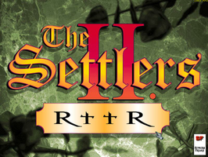
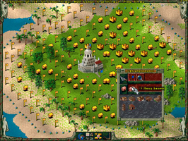

Return to the Roots
Dieser Artikel wurde für die folgenden Ubuntu-Versionen getestet:
Ubuntu 14.04 Trusty Tahr
Zum Verständnis dieses Artikels sind folgende Seiten hilfreich:
Das Projekt Return to the Roots 
 hat sich zur Aufgabe gemacht Die Siedler II nachzuprogrammieren und dabei neue Eigenschaften - wie Netzwerkunterstützung, Spielen in höheren Auflösungen und auch eine native Linux-Unterstützung - mit einzubauen. Zum Spielen werden die Originialdateien der Siedler II Gold Edition benötigt, da das Spiel die originalen Grafiken und Sounds von Siedler II verwendet. 3D Beschleunigung wird ebenfalls benötigt.
hat sich zur Aufgabe gemacht Die Siedler II nachzuprogrammieren und dabei neue Eigenschaften - wie Netzwerkunterstützung, Spielen in höheren Auflösungen und auch eine native Linux-Unterstützung - mit einzubauen. Zum Spielen werden die Originialdateien der Siedler II Gold Edition benötigt, da das Spiel die originalen Grafiken und Sounds von Siedler II verwendet. 3D Beschleunigung wird ebenfalls benötigt.
Das Projekt existiert seit 2005. Mittlerweile sind so gut wie alle Funktionen aus dem Originalspiel Siedler II implementiert worden. Der Quellcode kann über Launchpad eingesehen werden.
|  |  |
| RttR | Es geht los |
Installation¶
Folgende Pakete müssen im Vorfeld installiert [1] werden:
libsdl1.2debian
libsdl-mixer1.2
gettext
libsndfile1
libsamplerate0
 mit apturl
mit apturl
Paketliste zum Kopieren:
sudo apt-get install libsdl1.2debian libsdl-mixer1.2 gettext libsndfile1 libsamplerate0
sudo aptitude install libsdl1.2debian libsdl-mixer1.2 gettext libsndfile1 libsamplerate0
Fremdpakete¶
Das Programm von der Projektseite herunterladen. Hier stehen verschiedene Versionen zur Auswahl. Eine stabile Version (Stable)  (i386/x86_64) sowie eine aktuelle Version (Nightly) (i386/x86_64) des Programms, welche jedoch Fehler enthalten kann. Da die letzte stabile Version schon einige Zeit alt ist, empfiehlt es sich jedoch die aktuelle Nightly-Version zu verwenden.
(i386/x86_64) sowie eine aktuelle Version (Nightly) (i386/x86_64) des Programms, welche jedoch Fehler enthalten kann. Da die letzte stabile Version schon einige Zeit alt ist, empfiehlt es sich jedoch die aktuelle Nightly-Version zu verwenden.
Hinweis!
Fremdpakete können das System gefährden.
Die gewünscht Datei für die eigene Rechnerarchitektur herunterladen. Die heruntergeladene Archivdatei anschließend entpacken [2] und ggf. nach /opt/s25rttr verschieben [3]. Die Rechte [4] für den soeben erstellten Ordner anpassen und die Spieledateien, vom Originalspiel Siedler 2 Gold, in den Ordner /opt/s25rttr/share/s25rttr/S2 kopieren [5]:
cp -R /media/cdrom0/s2/* /opt/s25rttr/share/s25rttr/S2/
Musik¶
Abschließend von launchpadlibrarian.net die Musik-Dateien für Linux herunterladen, entpacken [2] und die .ogg-Dateien in den Ordner /opt/s25rttr/share/s25rttr/RTTR/MUSIC/SNG kopieren.
Um das Spiel zu starten kann man optional einen Starter in /usr/local/bin unter einem aussagekräftigen Titel, z.B. rttr, anlegen mit folgendem Inhalt [3] [6]:
1 2 3 | #!/bin/bash cd /opt/s25rttr/bin ./rttr.sh |
Ausführrechte [4] setzen. Nun kann das Spiel über rttr gestartet [7] werden. Sofern gewünscht einen Menüeintrag vornehmen [8].
Hinweis:
Um ein Update der Software zu verhindern kann der Spielaufruf, in der dritten Zeile des Skripts, von noupdate gefolgt sein. Zum Aufspüren von Fehlern wird debug angehängt,
Bedienung¶
Die aktuelle Version des Spiels gestattet lediglich den Mehrspieler-Modus über das Netzwerk.
Über "Mehrspieler -> Direkte IP" kann man ein Spiel erstellen oder einem bestehenden Spiel beitreten. Hierüber lässt sich auch ein Einzelspieler-Match starten. Eine KI ist jedoch nur in der Nightly-Version enthalten.
Alternativ kann man sich auch über "Internet-Lobby" ins Spiel bringen. Diese funktioniert ebenfalls nur mit der aktuellen Nightly-Version.
Hinweis:
Im IRC-Channel #siedler2.5 auf irc.freenode.net () findet man Mitspieler für eine Partie Siedler II.
Konfiguration¶
Über den Menüpunkt "Optionen" können Einstellungen zur Grafik und den Audioeinstellungen vorgenommen werden. Außerdem kann man hier den Namen im Spiel hinterlegen und die Sprache des Menüs.
Problemlösungen¶
Ab Lucid gibt es einen Bug in der nighly - es erscheint die Fehlermeldung:
error while loading shared libraries: libminiupnpc.so.5: cannot open shared object file: No such file or directory
Hier sollte die PPA verwendet werden, da diese das nötige Paket miniupnpc beinhaltet.
Sollte das Problem dennoch bestehen, sollte folgender Befehl ausgeführt werden:
sudo ln -s /usr/lib/libminiupnpc.so.8 /usr/lib/libminiupnpc.so.5
Tastenkürzel¶
| Return To The Roots | |
| Taste(n) | Funktion |
| Haus-Bau-Hilfe | |
| H | Hauptquartier |
| B | Startposition |
| L | Übersichtskarte |
| C | Gebäudenamen |
| S | Status der Gebäude |
| M | Spielemenü |
| P | Pause (aufheben) |
| F2 | Spielstand sichern / laden |
| F8 | Tastaturbelegung |
| F12 | Kontrollfenster |

Infobox¶
| Return to the Roots | |
| Originaltitel: | Die Siedler II – Veni, Vidi, Vici / Die Siedler II - Gold-Edition |
| Genre: | Simulation |
| Sprache: | |
| Veröffentlichung: | 1996 / 1997 (Gold) |
| Publisher: | Blue Byte GmbH |
| Systemvoraussetzungen: | 800 MHz-Prozessor / 3D-Grafikkarte >64 MB / 150 MB Festplattenplatz |
| Medien: | CD (2) / CD (1) |
| Strichcode / EAN / GTIN: | Gold-Edition |
| Läuft mit: | nativ |
- Erstellt mit Inyoka
-
 2004 – 2017 ubuntuusers.de • Einige Rechte vorbehalten
2004 – 2017 ubuntuusers.de • Einige Rechte vorbehalten
Lizenz • Kontakt • Datenschutz • Impressum • Serverstatus -
Serverhousing gespendet von